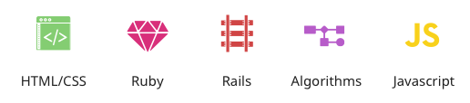

I quit my job to start creating websites a few months ago.
Now I'm moving forward to start making rad applications to save the world!
Code Snippets
Temperature Conversion
This ruby program will prompt the user for a temperature
in degrees Celsius and let the user know what the
corresponding temperature is in Fahrenheit.
def celcius_to_fahrenheit(cel)
return cel * 9 / 5 + 32
end
puts "Enter temperature in Celcius: "
cel = gets.to_i
puts "The temerature in Fahrenheit is
#{celcius_to_fahrenheit(cel)} degrees"
This ruby program will convert a plain number
to the ordinal of the number. So for example,
if the user enters 2, it will display 2nd, if
the user enters 3, it will display 3rd, etc.
Foobar
This ruby program is an adaptation of a classic technical
interview problem which displays sequences
of the Foobar pattern.
puts "How high should we count to?"
number = gets.to_i
def foobar(n)
foo = n % 3
bar = n % 5
if foo == 0 && bar == 0
puts "Foobar"
elsif foo == 0
puts "Foo"
elsif bar == 0
puts "Bar"
else
puts n
end
end
n = 1
while n <= number
foobar(n)
n = n + 1
end
Web Applications
Quote Generator
A database-powered quote generator with a mobile-first
design, using the Ruby on Rails framework, HTML, and CSS.
Uses Git and GitHub for version control, and launched
on Heroku.
Yelp Clone
A Yelp clone that integrates with the Google Maps API
and includes features like user comments, star ratings,
image uploading, and user authentication.
Two-Sided Market Place
A two-sided, video-streaming marketplace platform that
features credit card payment capabilities, user role
management, complex user interfaces, and advanced
database relationships.
Test Driven Development
An Instagram clone that was built using industry-standard, test-driven
development following numerous red/green/refactor cycles.
Single Page Todo Application
This single-page to-do application features a
fluid user interface that– by using JavaScript–
allows users to rapidly add dynamic content.
Agile Team Project
Worked on an Agile software development team building
a chess application. Under the guidance of a senior software engineer,
we had weekly Agile team meetings for code reviews, sprint planning,
and feature assignments.
Skills & Tools
Devin will develop proficiency and expertise
in the following programming languages and
comfort with the following tools.

Contact
Currently entertaining new opportunities.
Please get in touch via email: